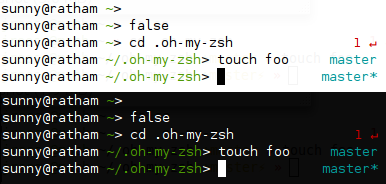

Switching from Fish to ZSH
I recently migrated from Fish to ZSH using the excellent oh-my-zsh as the base configuration, plus my contributed fishy theme (shown below) for a Fish-like prompt with Git integration, and the zsh-syntax-highlighting plugin for Fish-like syntax highlighting of the command line.
ZSH worked well, but I dearly missed Fish’s ubiquitous up-arrow history search, which was the main feature that made Fish so productive for me: type any part of any command that you had entered in the past and press the up arrow key until you happen upon a suitable match. Indispensable!
Before succumbing to my overwhelming desire to implement this feature in ZSH and release it to the world as an open source project on GitHub, I briefly searched for existing solutions and found a past attempt by Peter Stephenson on the ZSH mailing list back in September 2009. However, I was unable to install it properly into my ZSH configuration at the time.
I was fiddling with the installation again yesterday when Guido van Steen announced on the fish-users mailing list that he had revised Stephenson’s implementation and released it as part of fizsh (Friendly Interactive ZSH). Although I was slightly disappointed that someone beat me to it, I could not help but marvel at the collaborative power of the Internet and Open Source! We truly live in amazing times.
I downloaded the fizsh tarball, extracted the
etc/fizsh/fizsh-history-search-backward file into my
~/.oh-my-zsh/functions/ directory, and copied the following activation
logic from the extracted etc/fizsh/fizshrc file to the bottom of my
~/.zshrc file:
autoload -U fizsh-history-search-backward
zle -N fizsh-history-search-forward fizsh-history-search-backward
zle -N fizsh-history-search-backward
bindkey '\e[A' fizsh-history-search-backward
bindkey '\e[B' fizsh-history-search-forward
I must say that I’m very pleased with the results so far: I now have Fish’s ubiquitous up-arrow history search feature natively in ZSH! And with this, I can finally say goodbye to the Fish shell without regret: so long, old pal, and thanks for all the fish! ;-)